佐藤医院 診療内容
診療内容
当院では、地域の皆様の健康を支えるため、幅広い内科診療を行っております。日常的な体調管理から、各種の検査や治療に至るまで、どんなお悩みもお気軽にご相談ください。
一般内科診療
風邪や発熱、喉の痛み、頭痛、腹痛などの症状を中心に、一般的な体調不良の診療を行っています。
また、原因不明の不調や軽い症状であっても、早期診断に努めております。

生活習慣病の診断・治療
高血圧症、糖尿病、脂質異常症（高コレステロール血症）、メタボリック症候群など、生活習慣病の診断と治療を行います。
病気の進行を予防し、健康維持のための生活指導や薬物療法を行います。

消化器系の診療
胃痛、胃もたれ、胸やけ、便秘、下痢などの消化器系の不調に対応しています。
必要に応じて胃カメラや超音波検査などを実施し、胃腸の健康をサポートします。

呼吸器系の診療
咳、息切れ、胸の痛みなど、呼吸器系の症状について診療を行っています。
季節性の喘息やアレルギー性鼻炎、慢性閉塞性肺疾患（COPD）などにも対応し、適切な治療と予防をサポートします。
生活習慣病の診断・治療
風邪や発熱、喉の痛み、頭痛、腹痛などの症状を中心に、一般的な体調不良の診療を行っています。
また、原因不明の不調や軽い症状であっても、早期診断に努めております。

健康診断・各種検査
定期健康診断をはじめ、血液検査、尿検査、心電図、超音波検査、レントゲン検査などを行い、病気の早期発見と予防に努めます。
異常が見つかった場合は、経過観察や専門治療へとつなげてまいります。

予防接種
インフルエンザや肺炎球菌などの各種予防接種を行っています。
定期的な接種で感染予防と体調管理を支援いたします。
予防接種は予約制となりますので、事前にお問い合わせください。
禁煙外来
禁煙をご希望の方に、禁煙治療とサポートを行っています。
必要に応じて、ニコチン依存症の治療薬を使用し、無理なく禁煙が継続できるようお手伝いいたします。